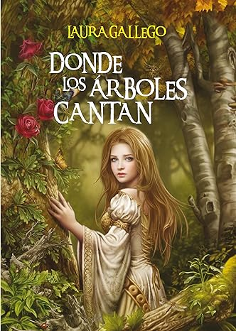

Narra la historia de Alonso Quijano, un hidalguense pobre que enloquece leyendo libros de caballerias y decide convertirse en cabellero

Es una fábula filosófica sobre un piloto perdido en el Sahara que conoce a un pequeño príncipe de otro asteroide

Narra la transformación de Viana, una joven noble, en una valiente guerrera tras la invasión de bárbaros que amenaza su hogar, forzándola a adentrarse en el mágico y legendario Gran Bosque

Narra cómo Max Carver, de 13 años, se muda a un pueblo costero huyendo de la guerra en 1943.

. Tras una tormenta, descubren un naufragio que los lleva a un mapa del tesoro, enfrentándose a buscadores de oro peligrosos para encontrarlo
Ambientada en la Barcelona de la posguerra (años 40), combina elementos de misterio, romance y suspenso en una atmósfera gótica y nostálgica